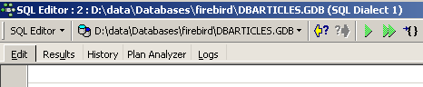
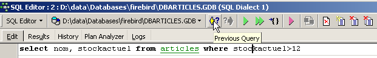
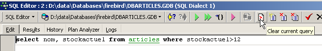
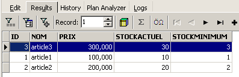
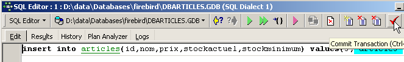
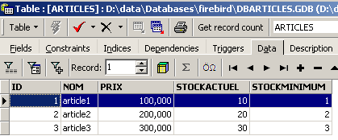

2. Tutorial de Firebird
Antes de abordar los conceptos básicos del lenguaje SQL, le mostramos al lector cómo instalar Firebird SGBD, así como el cliente gráfico IB-Expert.
2.1. ¿Dónde encontrar Firebird?
El sitio web principal de Firebird es [http://firebird.sourceforge.net/]. La página de descargas ofrece los siguientes enlaces (abril de 2005):

Se descargarán los siguientes elementos:
el archivo SGBD para Windows | |
una biblioteca de clases para las aplicaciones .NET que permite acceder al SGBD sin necesidad de un controlador ODBC. | |
el controlador ODBC de Firebird |
Instala estos elementos. El SGBD se instala en una carpeta cuyo contenido es similar al siguiente:
 |
Los binarios se encuentran en la carpeta [bin]:
 |
permite iniciar/detener el SGBD | |
cliente de línea que permite administrar bases de datos |
Cabe señalar que, por defecto, el administrador de SGBD se llama [SYSDBA] y su contraseña es [masterkey]. Se han instalado los siguientes menús en [Démarrer]:

La opción [Firebird Guardian] permite iniciar o detener el SGBD. Tras el inicio, el ícono del SGBD permanece en la barra de tareas de Windows:
 |
Para crear y administrar bases de datos Firebird con el cliente de línea [isql.exe], es necesario leer la documentación que se incluye con el producto en la carpeta [doc].
2.2. a documentación de Firebird
La documentación sobre Firebird y sobre el lenguaje SQL se puede encontrar en el sitio web de Firebird (enero de 2006):

Hay varios manuales disponibles en inglés:
para empezar con FB | |
para entender los códigos de error que devuelve FB |
También hay disponibles manuales de capacitación sobre el lenguaje SQL:

para aprender a crear tablas, qué tipos de datos se pueden utilizar, etc. | |
la guía de referencia para aprender SQL con Firebird |
Una forma rápida de trabajar con Firebird y aprender el lenguaje SQL es utilizar un cliente gráfico. Un ejemplo de este tipo de cliente es IB-Expert, que se describe en el siguiente párrafo.
2.3. Trabajar con SGBD Firebird gracias a IB- Expert
El sitio web principal de IB-Expert es [http://www.ibexpert.com/]. La página de descargas ofrece los siguientes enlaces:

Elegiremos la versión gratuita [Personal Edition]. Una vez descargada e instalada, tendremos una carpeta similar a la siguiente:

El ejecutable es [ibexpert.exe]. Normalmente hay un acceso directo disponible en el menú [Démarrer]:

Una vez iniciado, IBExpert muestra la siguiente ventana:

Usemos la opción [Database/Create Database] para crear una base de datos:
puede ser [local] o [remote]. En este caso, nuestro servidor está en la misma máquina que [IBExpert]. Por lo tanto, elegimos [local] | |
utilizamos el botón del tipo [dossier] del menú desplegable para seleccionar el archivo de la base de datos. Firebird almacena toda la base de datos en un solo archivo. Esa es una de sus ventajas. La base de datos se transfiere de una computadora a otra simplemente copiando el archivo. El sufijo [.gdb] se agrega automáticamente. | |
SYSDBA es el administrador predeterminado de las distribuciones actuales de Firebird | |
masterkey es la contraseña del administrador SYSDBA de las distribuciones actuales de Firebird | |
el dialecto SQL que se debe utilizar | |
si la casilla está marcada, IBExpert mostrará un enlace a la base de datos creada después de haberla creado |
Si al hacer clic en el botón de creación [OK] aparece la siguiente advertencia:

es porque no has iniciado Firebird. Inícialo. Aparecerá una nueva ventana:

Familia de caracteres a utilizar. Aunque la captura de pantalla anterior no muestra ninguna información, se recomienda seleccionar en la lista desplegable la familia [ISO-8859-1], que permite utilizar caracteres latinos acentuados. |
[IBExpert] es capaz de manejar diferentes SGBD derivados de Interbase. Seleccione la versión de Firebird que tenga instalada: |
Una vez que [Register] valida esta nueva ventana, se obtiene el siguiente resultado:

Para acceder a la base de datos creada, basta con hacer doble clic en su enlace. IBExpert muestra entonces un árbol de navegación que permite acceder a las propiedades de la base de datos:

2.4. Creación de una tabla de datos
Creemos una tabla. Hacemos clic con el botón derecho en [Tables] (véase la ventana anterior) y seleccionamos la opción [New Table]. Aparece la ventana de definición de las propiedades de la tabla:
 |
Comencemos por asignarle el nombre [ARTICLES] a la tabla utilizando el campo de entrada [1]:
 |
Usemos el campo de entrada [2] para definir una clave primaria [ID]:
 |
Para convertir un campo en clave primaria, haz doble clic en el campo [PK] (Primary Key). Agreguemos campos con el botón ubicado encima de [3]:

Mientras no hayamos «compilado» nuestra definición, la tabla no se creará. Usemos el botón [Compile] que se encuentra arriba para finalizar la definición de la tabla. IBExpert prepara las consultas SQL para generar la tabla y solicita confirmación:

Curiosamente, IBExpert muestra las consultas SQL que ha ejecutado. Esto permite aprender tanto el lenguaje SQL como el dialecto SQL, que posiblemente sea propio y se utilice. El botón [Commit] permite validar la transacción en curso, mientras que [Rollback] la cancela. Aquí la aceptamos con [Commit]. Una vez hecho esto, IBExpert agrega la tabla creada a la estructura de nuestra base de datos:

Al hacer doble clic en la tabla, se accede a sus propiedades:

El panel [Constraints] nos permite agregar nuevas restricciones de integridad a la tabla. Abrámoslo:

Aquí encontramos la restricción de clave primaria que creamos. Podemos agregar otras restricciones:
- claves externas [Foreign Keys]
- restricciones de integridad de campos [Checks]
- restricciones de unicidad de campos [Uniques]
Cabe señalar que:
- Los campos [ID, PRIX, STOCKACTUEL, STOKMINIMUM] deben ser >0
- el campo [NOM] debe ser distinto de vacío y único
Abramos el panel [Checks] y hagamos clic con el botón derecho en su área de definición de restricciones para agregar una nueva restricción:

Definamos las restricciones deseadas:

Cabe señalar que la restricción [NOM<>''] utiliza dos apóstrofos y no comillas. Compilemos estas restricciones con el botón [Compile] que se encuentra arriba:

Una vez más, IBExpert demuestra su carácter didáctico al indicar las consultas SQL que ha ejecutado. Pasemos ahora al panel [Constraints/Uniques] para indicar que el nombre debe ser único. Esto significa que no puede haber dos nombres iguales en la tabla.

Definamos la restricción:

Luego, compilémosla. Una vez hecho esto, abramos el panel [DDL] (Lenguaje de Definición de Datos) de la tabla [ARTICLES]:

Este panel proporciona el código SQL para generar la tabla con todas sus restricciones. Podemos guardar este código en un script para ejecutarlo más adelante:
SET SQL DIALECT 3;
SET NAMES NONE;
CREATE TABLE ARTICLES (
ID INTEGER NOT NULL,
NOM VARCHAR(20) NOT NULL,
PRIX DOUBLE PRECISION NOT NULL,
STOCKACTUEL INTEGER NOT NULL,
STOCKMINIMUM INTEGER NOT NULL
);
ALTER TABLE ARTICLES ADD CONSTRAINT CHK_ID check (ID>0);
ALTER TABLE ARTICLES ADD CONSTRAINT CHK_PRIX check (PRIX>0);
ALTER TABLE ARTICLES ADD CONSTRAINT CHK_STOCKACTUEL check (STOCKACTUEL>0);
ALTER TABLE ARTICLES ADD CONSTRAINT CHK_STOCKMINIMUM check (STOCKMINIMUM>0);
ALTER TABLE ARTICLES ADD CONSTRAINT CHK_NOM check (NOM<>'');
ALTER TABLE ARTICLES ADD CONSTRAINT UNQ_NOM UNIQUE (NOM);
ALTER TABLE ARTICLES ADD CONSTRAINT PK_ARTICLES PRIMARY KEY (ID);
2.5. Inserción de datos en una tabla
Ahora es el momento de ingresar datos en la tabla [ARTICLES]. Para ello, utilicemos su panel [Data]:

Los datos se ingresan haciendo doble clic en los campos de entrada de cada fila de la tabla. Se agrega una nueva fila con el botón [+] y se elimina una fila con el botón [-]. Estas operaciones se realizan en una transacción que se valida con el botón [Commit Transaction] (véase más arriba). Sin esta validación, los datos se perderán.
2.6. El editor SQL de [IB-Expert]
El lenguaje SQL (Lenguaje de Consulta Estructurado) permite al usuario:
- crear tablas especificando el tipo de datos que almacenarán y las restricciones que dichos datos deben cumplir
- insertar datos en ellas
- modificar algunos de ellos
- eliminar otros
- explotar su contenido para obtener información
- ...
IBExpert permite a un usuario realizar las operaciones del 1 al 4 de manera gráfica. Acabamos de verlo. Cuando la base de datos contiene numerosas tablas, cada una con cientos de filas, se necesita información que es difícil de obtener visualmente. Supongamos, por ejemplo, que una tienda virtual en la web tiene miles de compradores al mes. Todas las compras se registran en una base de datos. Al cabo de seis meses, se descubre que un producto «X» tiene fallas. Se desea contactar a todas las personas que lo compraron para que devuelvan el producto y lo cambien sin costo alguno. ¿Cómo encontrar las direcciones de estos compradores?
- Se pueden revisar visualmente todas las tablas y buscar a esos compradores. Esto tomará unas horas.
- Se puede ejecutar una orden SQL que generará la lista de estas personas en unos segundos
El lenguaje SQL resulta útil siempre
- la cantidad de datos en las tablas es considerable
- cuando hay muchas tablas relacionadas entre sí
- la información que se busca está distribuida en varias tablas
- ...
Ahora presentamos el editor SQL de IBExpert. Se puede acceder a él mediante la opción [Tools/SQL Editor] o [F12]:

De esta manera, tenemos acceso a un editor avanzado de consultas SQL con el que podemos experimentar con consultas. Escribamos una consulta:

Ejecutamos la consulta SQL con el botón [Execute] que se encuentra arriba. Obtenemos el siguiente resultado:

Arriba, la pestaña [Results] muestra la tabla de resultados de la orden SQL [Select]. Para emitir una nueva orden SQL, basta con regresar a la pestaña [Edit]. Allí se encuentra la orden SQL que ya se ha ejecutado.

Varios botones de la barra de herramientas son útiles:
- el botón [New Query] permite pasar a una nueva consulta SQL:

A continuación, aparece una página de edición en blanco:

A continuación, se puede ingresar una nueva orden SQL:

y ejecutarlo:

Volvamos a la pestaña [Edit]. Las diferentes órdenes SQL emitidas se guardan en la memoria mediante [IB-xpert]. El botón [Previous Query] permite volver a una orden SQL emitida anteriormente:

De esta manera, se regresa a la consulta anterior:

El botón [Next Query], por su parte, permite pasar a la orden siguiente, SQL:

Encontramos entonces la orden SQL, que aparece a continuación en la lista de órdenes SQL guardadas:

El botón [Delete Query] permite eliminar una orden SQL de la lista de órdenes guardadas:

El botón [Clear Current Query] permite borrar el contenido del editor para la orden SQL que se muestra:

El botón [Commit] permite validar definitivamente los cambios realizados en la base de datos:

El botón [RollBack] permite deshacer los cambios realizados en la base de datos desde el último [Commit]. Si no se ha ejecutado ningún [Commit] desde que se conectó a la base de datos, entonces se deshacen los cambios realizados desde esa conexión.

Veamos un ejemplo. Insertemos una nueva fila en la tabla:

Se ejecuta el comando SQL, pero no se muestra nada. No sabemos si la inserción se ha realizado. Para averiguarlo, ejecutemos el comando SQL, que sigue a [New Query]:

Se obtiene el siguiente resultado con [Execute]:

Por lo tanto, la fila se ha insertado correctamente. Ahora revisemos el contenido de la tabla de otra manera. Hagamos doble clic en la tabla [ARTICLES] en el explorador de bases de datos:
Se obtiene la siguiente tabla:

El botón con la flecha que se muestra arriba permite actualizar la tabla. Tras la actualización, la tabla anterior no cambia. Da la impresión de que la nueva fila no se ha insertado. Regresemos al editor SQL (F12) y luego validemos la orden SQL emitida con el botón [Commit]:

Una vez hecho esto, regresemos a la tabla [ARTICLES]. Podemos observar que nada ha cambiado, incluso al utilizar el botón [Refresh]:
Ahora, abramos la pestaña [Fields] y luego regresemos a la pestaña [Data]. Esta vez, la línea insertada aparece correctamente:

Cuando comienza la ejecución de las diferentes órdenes SQL, el editor abre lo que se conoce como una transacción en la base de datos. Los cambios realizados por estas órdenes SQL del editor SQL solo serán visibles mientras permanezcamos en el mismo editor SQL (se pueden abrir varios). Es como si el editor SQL no trabajara en la base de datos real, sino en una copia propia. En realidad, no es exactamente así como ocurre, pero esta imagen puede ayudarnos a comprender el concepto de transacción. Todos los cambios realizados en la copia durante una transacción solo serán visibles en la base de datos real una vez que hayan sido validados mediante un [Commit Transaction]. La transacción actual se da por terminada y comienza una nueva transacción.
Los cambios realizados durante una transacción pueden anularse mediante una operación llamada [Rollback]. Hagamos el siguiente experimento. Iniciemos una nueva transacción (basta con ejecutar [Commit] en la transacción actual) con la orden SQL siguiente:

Ejecutemos esta orden, que elimina todas las filas de la tabla [ARTICLES], y luego ejecutemos [New Query], la nueva orden SQL, de la siguiente manera:

Obtenemos el siguiente resultado:

Se han eliminado todas las filas. Recordemos que esto se realizó en una copia de la tabla [ARTICLES]. Para verificarlo, hagamos doble clic en la tabla [ARTICLES] que se muestra a continuación:
y veamos la pestaña [Data]:

Incluso si usamos el botón [Refresh] o pasamos a la pestaña [Fields] para luego regresar a la pestaña [Data], el contenido anterior no cambia. Esto ya se ha explicado. Estamos en otra transacción que trabaja con su propia copia. Ahora regresemos al editor SQL (F12) y usemos el botón [RollBack] para deshacer las eliminaciones de líneas que se han realizado:

Se nos solicita confirmación:

Confirmemos. El editor SQL confirma que los cambios se han revertido:

Volvamos a ejecutar la consulta SQL anterior para verificar. Encontramos las filas que habían sido eliminadas:

La operación [Rollback] ha devuelto la copia en la que trabaja el editor SQL al estado en que se encontraba al inicio de la transacción.